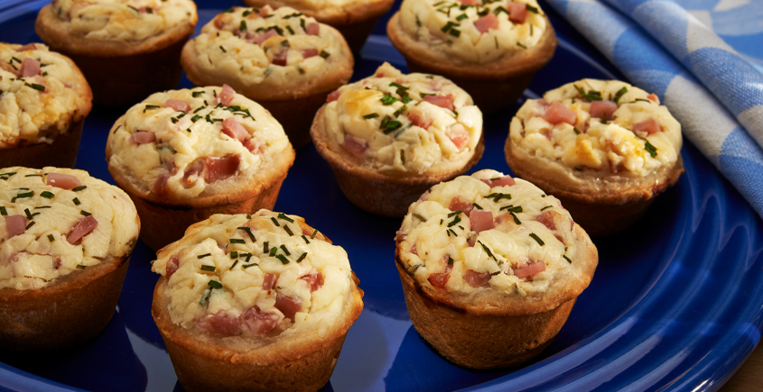

Ham and Cheese Tarts

(24 Tarts)
Description
These savory tarts have been a family favorite for years. Make the ham mixture in advance to save time when guests arrive.
Ingredients
Crust
- 2 cups "JIFFY" Baking Mix
- 2/3 cup milk
Filling
- 6 oz. cream cheese, softened
- 1 Tbsp. milk
- 1/4 tsp. dry mustard
- 3 Tbsp. chives
- 1/4 tsp.seasoned salt
- 1/4 tsp. garlic powder
- 1/2 cup ham, finely chopped
- 1/2 cup sour cream
Steps
- Preheat oven to 350°F.
- Grease mini muffin pans.
- Combine crust ingredients to form a soft dough.
- Knead several times on floured surface.
- Roll out to 1/8" thickness.
- Using a 2 1/2" cutter, cut out 24 biscuits and place in pans.
- Mold dough to fit bottom and slightly up sides. Set aside.
- For filling, combine cream cheese, milk, mustard, 1 tablespoon of chives, seasoned salt and garlic powder. Blend well.
- Fold in ham and sour cream.
- Spoon mixture into shells.
- Sprinkle reserved chives on top.
- Bake 20 - 25 minutes.
Return to Recipes
Return to Homepage